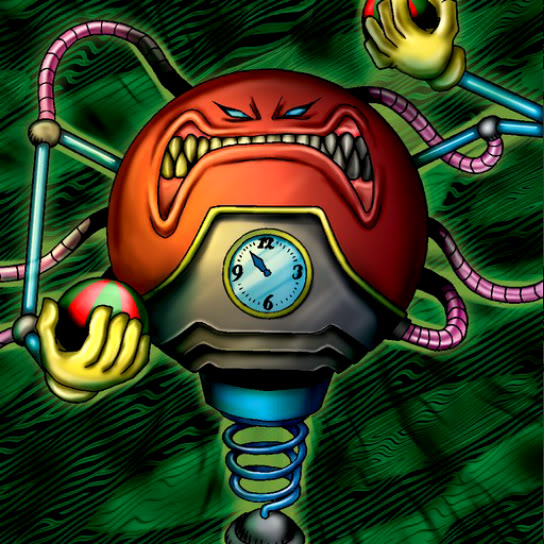

Blast Juggler

Description: "All cards located in the surrounding 3×3 area are automatically destroyed when this card is destroyed in battle."
STATS
ATK: 800
DEF: 900DECK COST
Deck Cost per Card: 22EFFECT NOT IMPLEMENTED
Fusion List (10 Possible Fusions)
- Blast Juggler + Ancient Sorcerer = Disk Magician
- Blast Juggler + Blue-Winged Crown = Crimson Sunbird
- Blast Juggler + Crawling Dragon = Cyber Saurus
- Blast Juggler + Faith Bird = Crimson Sunbird
- Blast Juggler + Hibikime = Cyber Soldier
- Blast Juggler + Mystical Sheep #1 = Flame Cerebrus
- Blast Juggler + Queen's Double = Charubin the Fire Knight
- Blast Juggler + Shadow Specter = Flame Ghost
- Blast Juggler + The Judgement Hand = Flame Swordsman
- Blast Juggler + Yamatano Dragon Scroll = Metal Dragon